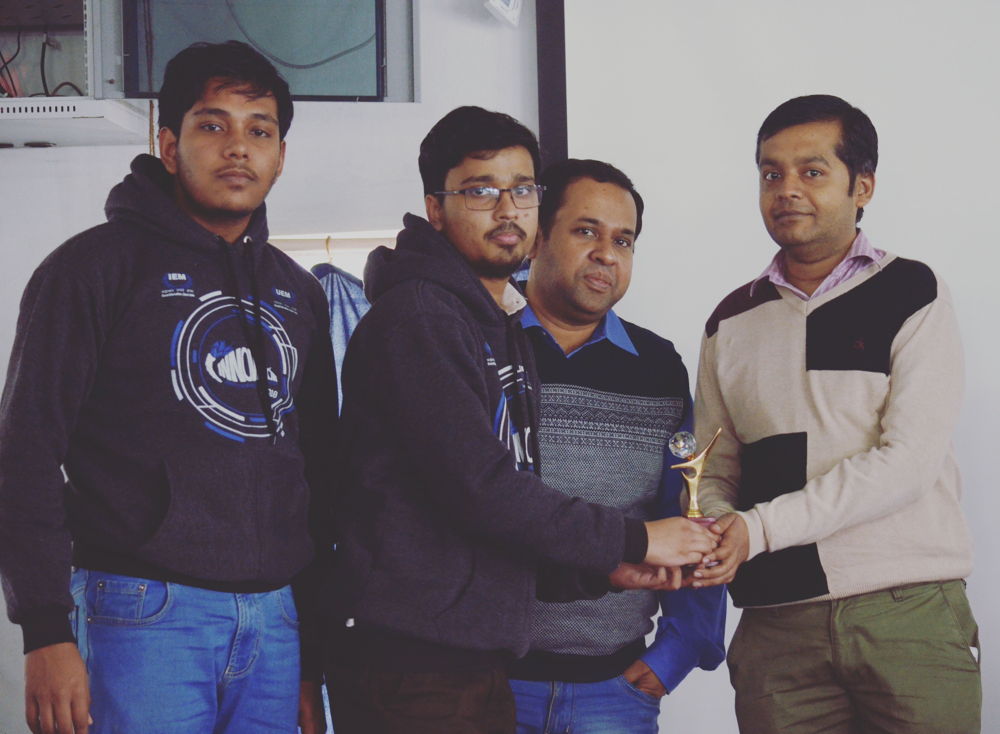
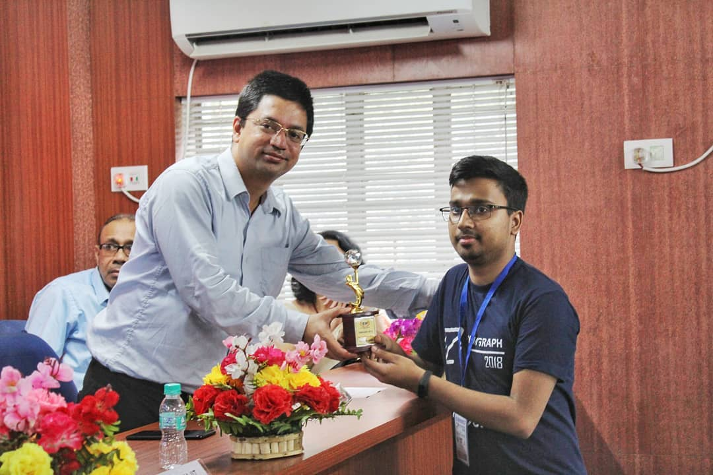

Software Developer
I design and code simple things, and I love what I do.
Hi, I’m Rajarshi. Nice to meet you.
I build enterprise-grade Salesforce solutions and AI-augmented systems that bridge platform depth with modern machine intelligence. My work spans Lightning component architecture, Agentforce agent design, Data Cloud segmentation, and portfolio-grade Python/RAG applications — with a consistent emphasis on end-to-end delivery, documentation, and measurable outcomes.
Work Experience
My professional journey
Deloitte Consulting — Salesforce Developer & Consultant
Delivering Sales Cloud, Service Cloud Agentforce and FSC engagements for enterprise financial services clients, including prospect scoring, lead handling agents, and Data Cloud integration.
Tata Consultancy Services — Salesforce Developer
Enterprise Salesforce development across complex multi-org environments.
Salesforce Consultant
Expertise across the Salesforce ecosystem & AI systems.
Sales Cloud, Service Cloud, Financial Services Cloud, Experience Cloud
Apex, LWC, Agentforce
- Application Architect
- Data Architect
- Agentforce Specialist
- Sharing and Visibility
Applied AI Engineer
RAG apps, Fine tuned LLMs, Agentic Workflows
- Python
- Agno
- FastAPI
- ChromaDB
Computer Vision
I love teaching machines to see and understand.
Scikit-learn, Numpy, OpenCv, Matplotlib, Tensorflow
- Python
My Achievements
Here are my recent milestones

Director's Award for Technowiz 2020.

Secured 2nd position in Hackstack 2018: Hackathon event of Innovacion (Tech Fest of IEM).

Best Contributor, IEMGRAPH 2018 - Graphics International Conference on Emerging Technology in Modeling and Graphics.
My Projects
A selection of things I've built
Traffic-Congestion Detection
Designed a traffic congestion detection algorithm using background subtraction combined with contour detection using opencv.
Blink
The project uses the webcam as an input device to detect blinks that simulate mouse clicks and lets user control a virtual keyboard to speak.
Medical Document Intake Pipeline
Multi-agent Agno pipeline with five sequential stages targeting FHIR-compatible structured output, using Gemini 2.0 Flash and Pixtral for vision-heavy extraction, deployed on Streamlit Cloud.
Air-Mouse
An application that computes 3D head pose from 2D video stream and moves the mouse cursor.
Breast Cancer Histopathology
Focuses on classifying breast tumor as cancerous and non-cancerous. It further classifies the tumor into two more classes for each.
Text-to-SQL RAG Application
Production-ready natural language to SQL pipeline using ChromaDB, FastAPI, and a structured evaluation framework — designed as a senior-role portfolio differentiator with full ADR documentation.
Publications
My research contributions
Detection of Pulsars Using an Artificial Neural Network
(Springer’s Advances in Intelligent Systems and Computing series) Emerging Technology in Modelling and Graphics. ISBN-978-981-13-7403-6.
Detection of Necrosis in Mice Liver Tissue using Deep Convolutional Neural Network
Lecture Notes in Computer Science, vol 11942. Springer. ISBN-978-3-030-34872-4.